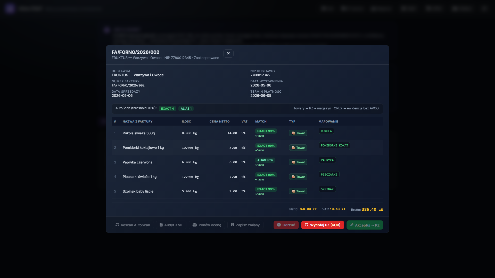
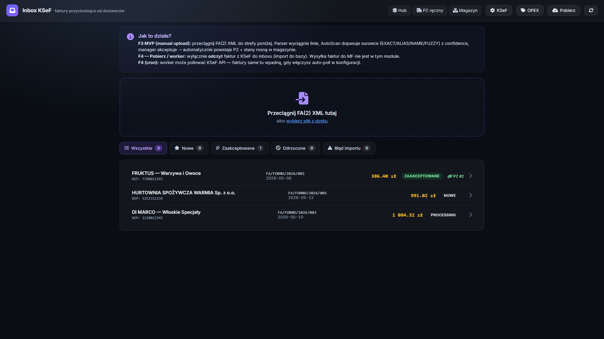
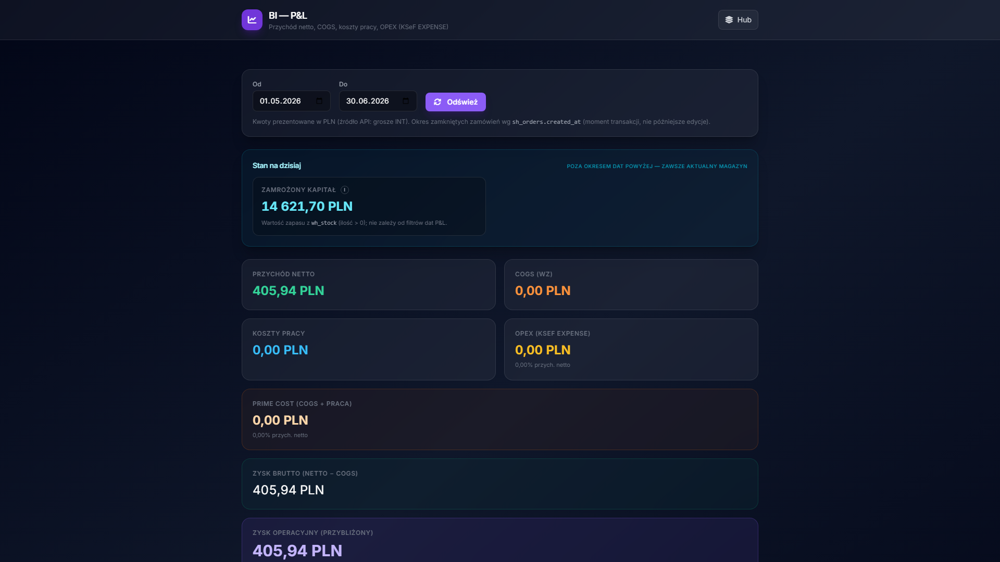
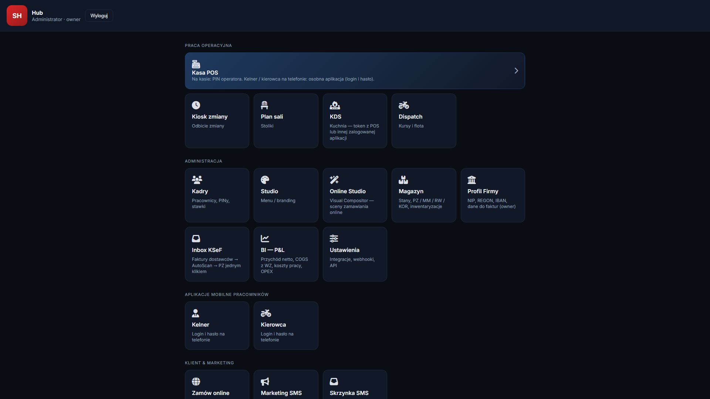
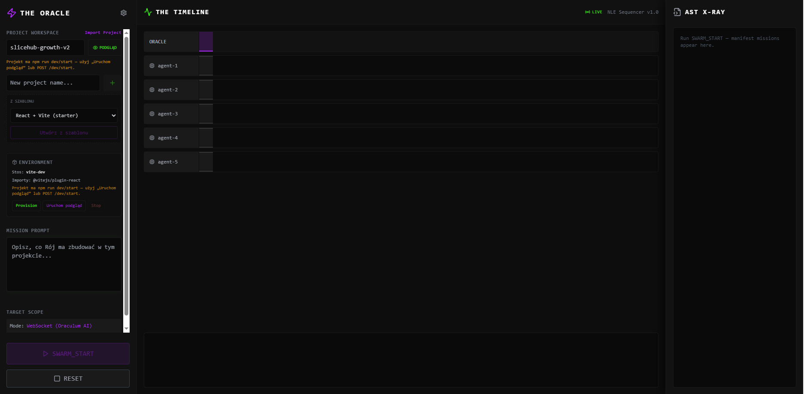

SliceHub Update
Stan prac i nowe technologie (Czerwiec 2026)
Kilka słów szczerości
Dzień dobry. Nazywam się Damian Malenta. Od 15 lat pracuję ciężko w branży gastronomicznej i wciąż w niej pracuję, by utrzymać rodzinę, prowadząc równolegle swój e-commerce. SliceHub to projekt mojego życia. Buduję go od podstaw zupełnie sam, programując po godzinach, kosztem snu i wolnego czasu.
Chcę być z Państwem szczery – to mordercze tempo sprawia, że powoli dochodzę do ściany moich możliwości fizycznych. Moja żona jest dziś jedyną osobą, która widzi to codzienne zmęczenie i wspiera mnie w tej wizji.
Mimo braku czasu, mam w rękach świetną technologię, która dowozi wyniki i wyprzedza obecny rynek. Aby jednak przestała być tylko moim nocnym projektem, a stała się w pełni gotowym rynkowym produktem, potrzebuję tlenu: partnera i wsparcia z programu Spark 3.0. Z Państwa pomocą będę mógł poświęcić się temu w 100%. Poniżej pokazuję, co pomimo zmęczenia udało mi się wdrożyć od momentu złożenia mojego pierwszego wniosku.
1. Działająca integracja z KSeF (AutoScan)
Udało mi się ukończyć moduł, który eliminuje ręczne przepisywanie faktur. System samodzielnie zaciąga dokumenty XML z Krajowego Systemu e-Faktur, a algorytm AutoScan z dużą precyzją decyduje co zrobić z każdą pozycją. Mapuje jedzenie na magazyn (tworząc PZ), a koszty takie jak czynsz, media czy prąd odfiltrowuje bezpośrednio w koszty operacyjne (OPEX).
Precyzyjne mapowanie pozycji z faktury

Zautomatyzowana skrzynka odbiorcza dla menedżera

2. Analityka finansowa w czasie rzeczywistym (BI P&L)
Dane pozyskane z KSeF automatycznie zasilają nowy moduł statystyk. Restaurator widzi na żywo przepalane koszty, zamrożony kapitał w towarze oraz marżowość z dokładnością co do grosza.

3. Architektura "Klocków LEGO" (Izolowane API)
System od samego początku opiera się na rygorystycznie odseparowanych od siebie silosach (POS, Magazyn, HR, KSeF). Wszystkie łączą się wyłącznie przez jedno centralne API. Dzięki temu aplikacja jest niesamowicie elastyczna i mogę do niej dołączać zewnętrzne narzędzia.

4. Prototyp Fabryki AI (Moje R&D)
W wolnych chwilach rozwijam prototyp autonomicznej fabryki do tworzenia oprogramowania. Chcę być szczery – projekt ten zmaga się jeszcze z dużą ilością problemów i nie jest idealny. Udało mi się jednak przetestować w nim prawdziwe perełki. Wymyśliłem działający sposób, który niemal całkowicie eliminuje halucynacje AI. Zdarzały się już doskonałe testy, w których w nieco ponad sekundę wygenerował on stronę z modułem rezerwacji i całym działającym backendem.
Brakuje mi tak naprawdę tylko (i aż) czasu na dokończenie tego narzędzia. Ze względu na pracę w gastronomii i e-commerce, testuję go głównie nocami. Docelowo chcę zaszczepić ten silnik AI pod aplikacje SliceHub.
Panel generowania kodu testowego
